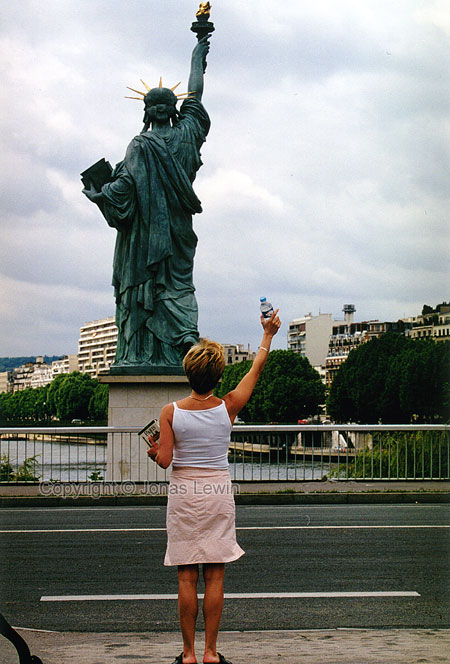

France, Paris, 2001-05.
|
I saw her in New York before, but as I remember she was a lot taller there. This must be her French sister. And the torch in her hand was not covered in gold, but I guess that's because the French likes their golden statues to much. A bit more modern lady. A water bottle in one hand, and a guide of Paris in the other. Both of the highly recommended when visiting Paris. We where walking a lot in Paris. And we discovered that Paris is big.
Much larger than I expected. |